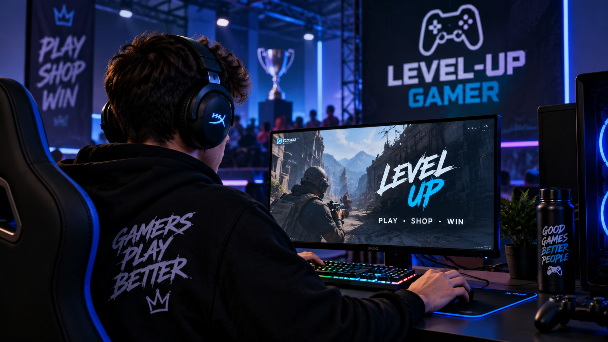

Los videojuegos competitivos siguen creciendo

Los videojuegos competitivos han crecido mucho en los últimos años. Cada vez existen más torneos, equipos profesionales y jugadores que participan en competencias nacionales e internacionales.
También ha aumentado el interés por periféricos gamer, computadores de alto rendimiento y accesorios que permiten mejorar la experiencia de juego.
En Level-Up Gamer buscamos ofrecer productos pensados para jugadores que quieran mejorar su equipamiento y disfrutar al máximo de sus videojuegos favoritos.
Volver al blog